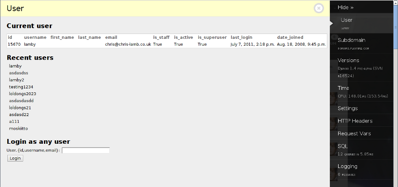

django-debug-toolbar-user-panel¶
Panel for the Django Debug Toolbar to easily and quickly switch between users.
- View details on the currently logged in user.
- Login as any user from an arbitrary email address, username or user ID.
- Easily switch between recently logged in users.

The panel supports django.contrib.auth.models.User models that have had the username field removed.
Installation¶
Add debug_toolbar_user_panel to your INSTALLED_APPS:
INSTALLED_APPS = (
...
'debug_toolbar_user_panel',
...
)
Add debug_toolbar_user_panel.panels.UserPanel to DEBUG_TOOLBAR_PANELS:
DEBUG_TOOLBAR_PANELS = (
'debug_toolbar_user_panel.panels.UserPanel'
'debug_toolbar.panels.version.VersionDebugPanel',
'debug_toolbar.panels.timer.TimerDebugPanel',
'debug_toolbar.panels.settings_vars.SettingsVarsDebugPanel',
'debug_toolbar.panels.headers.HeaderDebugPanel',
'debug_toolbar.panels.request_vars.RequestVarsDebugPanel',
'debug_toolbar.panels.sql.SQLDebugPanel',
'debug_toolbar.panels.template.TemplateDebugPanel',
'debug_toolbar.panels.signals.SignalDebugPanel',
'debug_toolbar.panels.logger.LoggingPanel',
)
Include debug_toolbar_user_panel.urls somewhere in your urls.py:
urlpatterns = patterns('',
...
url(r'', include('debug_toolbar_user_panel.urls')),
...
)